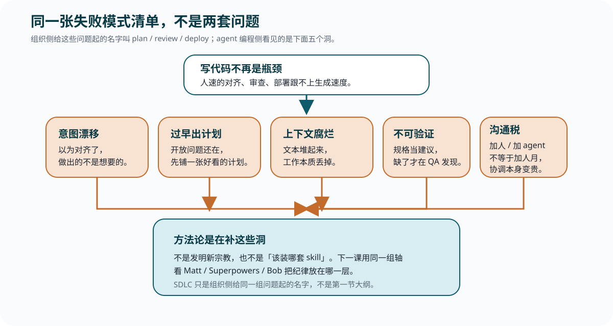

1 · 意图漂移
以为对齐了，做出的不是想要的
mattpocock/skills 把这记成最常见的失败：人和 agent 之间有沟通缺口，你以为对方懂了，看到成品才发现完全不是一回事。Howardism 对 Matt 工作流的整理把它接到布鲁克斯的 design concept：共享理解要先于任何计划；没有这层，规格和计划都是在给未对齐的东西做精装。
Lesson 0001
这一课只做一件事：给出同一张失败模式清单。方法论不是新宗教，是在补这些洞。组织侧后来管它们叫 plan / review / deploy，那只是起名，不是这一节的大纲。
人月不可互换，概念完整性比功能堆满更值钱，也没有能消灭本质复杂度的银弹。
布鲁克斯这三句并不是为 agent 写的，但正好挡住三种常见幻觉：多开几个 agent 不等于多了几个可互换人月；生成速度上去了，不等于「系统是什么」已经有一个脑子想清楚；工具能削偶发复杂度，打不掉需求、边界和概念结构本身的难度。本库的《人月神话》导读把这三句接到了今天。
2026 年 8 月，Anthropic 的 AI-Native SDLC playbook 把同一件事写成组织语言：code is no longer the bottleneck。写代码不再最贵之后，瓶颈移到计划、审查和部署这些仍按人速跑的步骤。这一课要的不是 SDLC 六阶段名词表，而是：人速步骤跟不上时，现场会先炸在哪。
「业界问题」和「agent 编程问题」在这里是同一张表。左边是组织给洞起的名字，右边是写代码的人看见的炸法。不要读成两节重复。

1 · 意图漂移
mattpocock/skills 把这记成最常见的失败：人和 agent 之间有沟通缺口，你以为对方懂了，看到成品才发现完全不是一回事。Howardism 对 Matt 工作流的整理把它接到布鲁克斯的 design concept：共享理解要先于任何计划；没有这层，规格和计划都是在给未对齐的东西做精装。
2 · 过早出计划
Howardism 记录的观察是：agent 在 plan mode 里会急着说「材料够了」，交出一份读起来完整、实现时才露馅的计划。Matt 的 wayfinder 把相反纪律写死：这是 prototypemaxxing，不是 planmaxxing。全面规划会掉进瀑布——后面的票建立在前面票会推翻的假设上。
3 · 上下文腐烂
GitHub Spec Kit 讨论区有一条被广泛附议的现场抱怨：SpecKit creates the illusion of work, generating a bunch of text。作者写的是，即便任务已经写清常量和改点，工具仍会花半小时造出未要求的接口和成百无意义测试；焦点从项目挪到了上千行指令。Howardism 从另一头说同一件事：不碰代码，开发者对系统的心智模型会烂掉；反馈环若隔着「规格 ⇄ AI ⇄ 代码」，bug 真正所在的「代码 ⇄ 测试」就被绕开了。
4 · 不可验证
Sibylline 的判断很硬：当前一批 spec-driven 工具上演的是规格剧场，轮到实现时 agent 把 spec 当建议，常见只能跟上 70%–90%；Markdown 还是有损压缩，五千 token 的精确讨论会被摘要成更短的散文。Playbook 在组织侧看到的对应画面是：人逐行审查跟不上 agent 的 diff。瓶颈在验证，不在又写一轮更长的规格。
5 · 加人 / 加 agent 的沟通税
人月神话说的就是这件事：过了阈值，新增成员带来的是接口对齐、同步和返工，不是线性产能。每个新 agent 还要吃上下文，还可能把概念完整性打散。Playbook 举的安全审查队列，是同一条税的组织版：输出乘上去了，按人速编制的闸门要么堵住，要么漏审。
用来证明「code 不再是瓶颈」不是课内修辞。它按 SDLC 阶段给组织侧建议；这一课只借开篇那句，不把六阶段当目录。
用来证明「生成大量文本、丢掉工作本质」是一线已经撞上的洞，不是作者编的。本课不教 Spec Kit，也不把它升成第四套对照。
方法论涌现，是因为这五个洞在生成速度面前被放大了。
下一课不再比谁的 skill 更多，而用同一组轴看三套方法把纪律放在哪一层。若某一格对不上这五个洞，它就还只是口味。
这一课最值得先读的是本库《人月神话》导读里关于人月、概念完整性和银弹的判断，以及 Claude playbook 开篇 Code is no longer the bottleneck。其余条目供核对，不必一次读完。